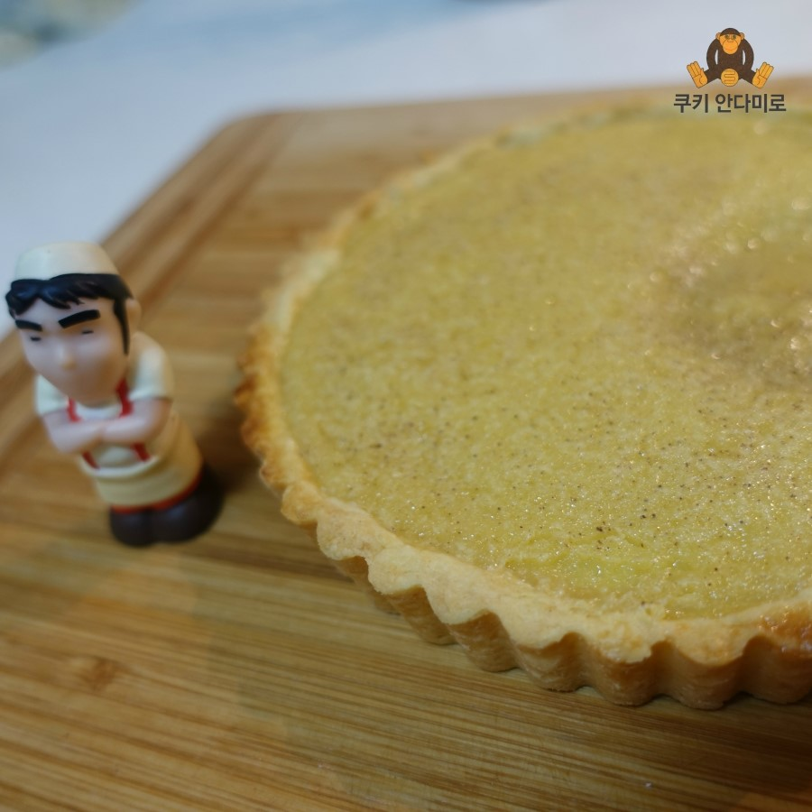
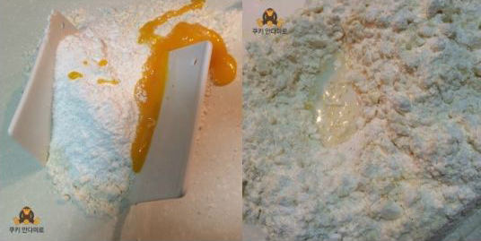
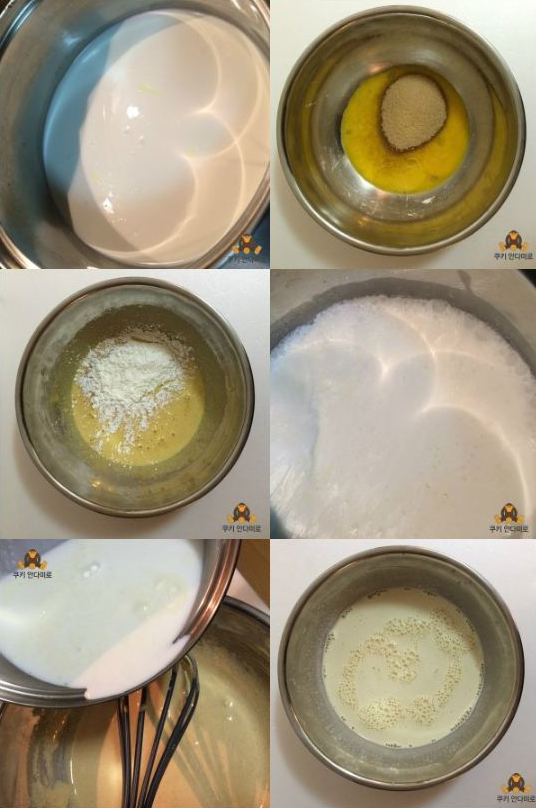
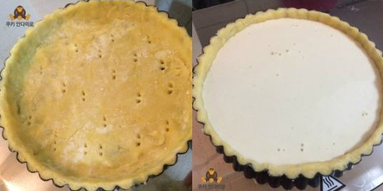

분량타르트 틀 (직경 16.5cm) 3개 분량
아래 레시피로 했을 경우, 필링이 조금 모자랐답니다 ~
하지만 직경이 작은 미니 타르트의 경우에는 타르트 틀 반죽이 더 많이 필요하기에,,
타르트 틀 사이즈를 비교해서 분량 조절하시면 될 것 같아요!
재료[ 타르트 틀 ]
버터 150g
슈가파우더 80g
바닐라향 조금
노른자 2개
박혁분 250g
우유 소량
[ 필링 재료 ]
달걀 노른자 50g
황설탕 80g
옥수수 전분 20g
우유 160g
생크림 160g
시나몬파우더 소량
생강가루 소량
바닐라 에센스 소량
EGG TART에그타르트 만들기

오늘은 홍콩의 유명한 디저트인 에그 타르트를 만들어보았습니다.

타르트 틀은 만드는 방법은,
작업대 위에 체친 박력분과 차가운 버터를 넣고,
스크랩퍼로 버터를 콩알만하게 다져주세요. 이후 슈가파우더와 노른자를 넣고 섞어준 뒤,
너무 퍽퍽하니, 우유를 조금씩 넣어가며 덩어리로 뭉쳐주세요.
비닐에 잘 싼 뒤, 30분 이상 냉장휴지 시켜줍니다.

작업대 위에 체친 박력분과 차가운 버터를 넣고,
스크랩퍼로 버터를 콩알만하게 다져주세요. 이후 슈가파우더와 노른자를 넣고 섞어준 뒤,
너무 퍽퍽하니, 우유를 조금씩 넣어가며 덩어리로 뭉쳐주세요.
비닐에 잘 싼 뒤, 30분 이상 냉장휴지 시켜줍니다.
에그 타르트에 들어갈 필링 재료를 만들어 줄 거에요.
우선 냄비에 우유와 생크림, 바닐라 에센스를 넣고 약간의 기포가 올라올 정도로 끓여주세요.
빈 볼에 달걀 노른자와 설탕을 넣고 잘 섞은 뒤, 기호에 따라 시나몬 파우더, 생강 가루를 넣어주세요. 옥수수 전분도 넣고 잘 섞어주세요.

우선 냄비에 우유와 생크림, 바닐라 에센스를 넣고 약간의 기포가 올라올 정도로 끓여주세요.
빈 볼에 달걀 노른자와 설탕을 넣고 잘 섞은 뒤, 기호에 따라 시나몬 파우더, 생강 가루를 넣어주세요. 옥수수 전분도 넣고 잘 섞어주세요.
저는 달걀 비린내가 싫어서.. 생강 가루와 시나몬 파우더를 좀 많이 넣어주었어요 ㅋ
한소쿰 끓였던 우유와 생크림을 식힌 뒤, 빠르게 노른자 반죽에 넣고 휘저어 주세요 ~
거품이 일면 유산지로 거품을 제거하거나 체쳐서 없애주어도 좋아요..
저는 귀찮아서.. 이 과정을 생략해주었더니... 굽고 나서도 기포가 사라지지 않았다는...!!!

한소쿰 끓였던 우유와 생크림을 식힌 뒤, 빠르게 노른자 반죽에 넣고 휘저어 주세요 ~
거품이 일면 유산지로 거품을 제거하거나 체쳐서 없애주어도 좋아요..
저는 귀찮아서.. 이 과정을 생략해주었더니... 굽고 나서도 기포가 사라지지 않았다는...!!!
준비한 타르트 틀에, 얇게 반죽을 펴서 담아주세요.
바닥에는 포크 등을 이용해 구명을 조금만 내어 주시구요.
필링은 90%정도 채워서 넣어주세요.
180도로 예열된 오븐에서 25분 정도 구워주면 완성이에요 ~
바닥에는 포크 등을 이용해 구명을 조금만 내어 주시구요.
필링은 90%정도 채워서 넣어주세요.
180도로 예열된 오븐에서 25분 정도 구워주면 완성이에요 ~

쨘~~
색이 좀 흐리멍텅?하게 나왔는데.. 맛은!!! 에그 타르트 맛!!ㅋ
굽고나서 바로 먹었더니.. 역시 맛있군요 ㅋㅋ
좀 식혀서 사진 찍었더니.. 필링이 푹.. 죽어버렸다능..ㅠㅠ
꼭 필링을 체치거나 유산지로 거품 제거하고 구워주세요!!!!!
목록으로 가기
색이 좀 흐리멍텅?하게 나왔는데.. 맛은!!! 에그 타르트 맛!!ㅋ
굽고나서 바로 먹었더니.. 역시 맛있군요 ㅋㅋ
좀 식혀서 사진 찍었더니.. 필링이 푹.. 죽어버렸다능..ㅠㅠ
꼭 필링을 체치거나 유산지로 거품 제거하고 구워주세요!!!!!